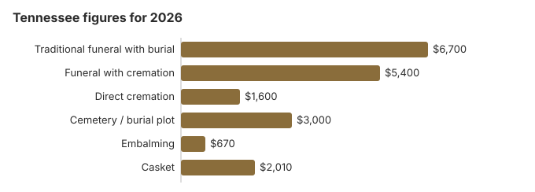

Funeral Costs in Tennessee: What Families Pay in 2026
A traditional Tennessee funeral averages about $6,700 in our 2026 model, roughly a fifth under the $8,300 national median, yet single quotes run anywhere from about $5,000 to $8,700. Cremation with a service is near $5,400 and direct cremation near $1,600, and 42% of Tennessee families now choose cremation. This page covers the item prices, death certificates, county and veterans help, and the Tennessee rules that change the bill.
What Each Tennessee Funeral Item Costs
These are modeled Tennessee averages. The Board of Funeral Directors and Embalmers licenses each home but leaves prices to the home.
| Item | Typical | Low to high |
|---|---|---|
| Traditional funeral with burial | $6,700 | $5,025 – $8,710 |
| Funeral with cremation | $5,400 | $4,320 – $7,020 |
| Direct cremation | $1,600 | $1,120 – $2,240 |
| Cemetery / burial plot | $3,000 | $1,500 – $6,000 |
| Embalming | $670 | $500 – $1,500 |
| Casket | $2,010 | $670 – $5,360 |
How to read these numbers: every figure here comes from our Tennessee cost model rather than from prices collected at homes in the state, so treat it as a planning guide and never as a quote or advice. See how the model works and our disclaimer.
State sources: Tenn. Code Ann. § 5-9-101(4).

Federal Price Rules in Tennessee
A Tennessee home that breaks the federal rule can be reported at ftc.gov, and the Funeral Consumers Alliance offers free advice.
Tennessee Cremation and Burial Pages
Each choice in more depth:
Cremation Costs in Tennessee
Direct cremation from about $1,600, a service with cremation near $5,400, plus urns and scattering; 42% of Tennessee families cremate.
Burial Costs in Tennessee
Plot from about $3,000, then casket, vault, marker and opening: a Tennessee burial totals $14,910-$19,410.
Lowest-Cost Tennessee Funerals
| Choice | About | What you get |
|---|---|---|
| Direct cremation | $1,600 | Collection, cremation and ashes returned; a permit is needed but Tennessee sets no wait (Tenn. Code Ann. 62-5-504). |
| Direct burial | $3,350 | Prompt burial, skipping embalming and the viewing; the Tennessee cemetery bills the plot and opening on top. |
| Green burial | $3,685 | Shroud or plain wooden casket, no embalming; only some Tennessee cemeteries take natural burials, so ask. |
| Cremation + memorial | $5,400 | Cremation now, memorial later |
| Traditional funeral | $6,700 | Viewing, service and burial |
Nashville, Memphis and Other Tennessee Cities
Nashville, Memphis, Knoxville and Chattanooga each have their own going rate, and the city figures below are our estimates for each:
What Moves a Tennessee Quote
Southern prices run under the $8,300 national median, and inside Tennessee the split is between metro Nashville and the small towns, where homes often quote 10-30% less.
Help With a Tennessee Funeral Bill
- A Tennessee county claim for a pauper burial needs an affidavit showing the cost, the burial in the county and that there was no other way to pay (Tenn. Code Ann. § 5-9-101(4)).
- To collect the one-time $255 from Social Security, a Tennessee widow, widower or eligible child must call 1-800-772-1213, and the claim has to be made within two years.
- Whoever paid for a veteran's funeral in Tennessee can file VA Form 21P-530EZ; for a death on or after October 1, 2026 that was not service-connected, VA pays up to $1,032 toward burial and $1,032 toward a plot (see our veteran burial benefits guide).
- Medicaid, charities and other sources are listed on our pages on help paying for a funeral and a funeral with no savings.
Educational Resources
- Funeral Consumers AllianceIndependent nonprofit consumer advocacy for funeral rights
- FTC Funeral RuleThe federal rule protecting funeral consumers
- Funeral Insurance GuideCompare final expense and burial insurance options
- Best Burial Insurance CompaniesSide-by-side comparison of top burial insurance providers
- Payment Assistance GuideGovernment programs and financial help for funeral costs
- Insurance Plan ComparisonCompare coverage, premiums, and payout speed across providers
Compare Funeral Costs
- Average Funeral Cost in 2026National cost breakdown with real prices
- Cremation vs. Burial Cost ComparisonSide-by-side price comparison to help you decide
- Funeral Cost BreakdownEvery line item explained: know what you're paying for
- Cheapest Funeral OptionsLower-cost alternatives, with typical price ranges
- Direct Cremation: Most Affordable OptionNFDA 2023 median $2,645 with a family-supplied container (latest available)
- How to Compare Funeral PricesStep-by-step guide to getting the best price
Church and Homegoing Traditions in Tennessee
Homegoing services, repast meals, and strong church involvement remain part of Tennessee funeral culture, and many congregations will cover or reduce the service-venue portion of the cost for members. When pricing a traditional funeral in Tennessee, ask explicitly whether the quote assumes the service at the funeral home versus at a church; the latter often drops the facility fee by $500-$1,500.
Tennessee: Cremate or Bury?
Cremation
- Direct cremation near $1,600
- Near $5,400 once a service is added
- No cemetery plot needed
- A memorial on your own schedule
- Chosen by 42% of Tennessee families
Traditional Burial
- Funeral near $6,700
- Plot near $3,000 more
- Outer container usually required by the cemetery
- A fixed place to visit
- Metal caskets: about $2,500 nationally (NFDA 2023 General Price List Study); Tennessee sellers vary
Tennessee Extras to Check
Watch for these on a Tennessee bill.
- Embalming billed as mandatory. No Tennessee statute requires it.
Planning a Tennessee Funeral
- First call to make: cremation or burial? cremation in Tennessee or burial in Tennessee.
Tennessee death certificates: $15 a copy
Tennessee charges a flat $15 for every certified death certificate, the first and each extra alike, and the same $15 if the search turns up no record and you get a "no record found" letter instead (Tennessee Office of Vital Records, fees; checked October 29, 2026).
- Any county will do: with the state's electronic issuance system, every county health department can print a death certificate registered anywhere in Tennessee, so you need not travel to the county of death.
- In Nashville: the state office is on the first floor of the Andrew Johnson Tower, 710 James Robertson Parkway (entrance on the Rosa Parks Blvd. Side), open 8 a.m. to 4 p.m. on weekdays with no appointment needed. It takes cash, check, card or money order.
- By mail or online: send form PH-1663, a copy of a signed government ID and a check to Tennessee Vital Records at the same address, or use VitalChek online, the state's only card vendor, for an extra charge.
- Who qualifies: a parent, child or spouse; anyone else needs papers showing a right to the record, such as letters testamentary or an insurance policy naming them.
- Older deaths: the state keeps death records for 50 years; earlier ones are at the Tennessee State Library and Archives (CDC, Where to Write).
Because extras cost the full $15, count how many agencies truly need an original. Many banks and insurers accept a photocopy once they have seen one certified copy, so five copies ($75) is often more than enough.
Tennessee's funeral board, county burials and veterans' graves
Licenses for Tennessee funeral directors, embalmers and funeral establishments come from the Board of Funeral Directors and Embalmers. Its number, 615-741-5062, handles license checks and complaints about prices.
Tennessee does not appear on the Funeral Consumers Alliance list of nine states where some after-death steps need a funeral director, so a family may carry out much of the work itself, provided the death certificate and disposition permit are filed. A crematory needs that permit, though the state sets no waiting period before cremation (Tenn. Code Ann. 62-5-504).
When the county pays
A county's legislative body may choose to pay for the burial or cremation of a poor person who dies there with no means, but nothing obliges it to (Tenn. Code Ann. § 5-9-101(4)). The claim must be backed by an affidavit stating the cost, that the burial was in that county and that no other money was available. (Source: Tenn. Code Ann. § 5-9-101(4).) The $255 Social Security payment is not a fallback for the home; only an eligible spouse or child can claim it, within two years.
Veterans' cemeteries in Tennessee
The funeral home books national cemetery graves through the VA's National Cemetery Scheduling Office (800-535-1117): Chattanooga (423-855-6590), Mountain Home (423-979-3535), and, for cremated remains only, Knoxville (423-979-3535), Memphis (901-386-8311) and Nashville (615-860-0086). The four state cemeteries deal with families directly: East Tennessee (865-577-3228), Middle Tennessee (615-532-2238), West Tennessee (901-543-7005) and Parkers Crossroads (731-967-4127).
Order of business in Tennessee
- Get itemized prices by phone or in person from more than one Tennessee home, and pay only for lines you choose.
- Settle the embalming and viewing question first; it decides most of the bill.
- Ask the county mayor's office whether your county funds indigent burials at all.
- For a veteran, check Chattanooga or the nearest state cemetery before buying a private plot.
- Report a hidden or ignored price list to the board, 615-741-5062.
Frequently Asked Questions
What does a Tennessee funeral cost now?
Expect about $6,700 for a traditional Tennessee funeral, from about $1,600 for direct cremation, and near $5,400 when cremation follows a service. The traditional number sits 19% under the $8,300 national median, and choosing burial adds roughly $3,000 for the plot.
Is cremation cheaper in Tennessee?
Yes, usually by more than $5,100: about $1,600 for direct cremation against $6,700 for a funeral with burial, and the plot comes on top. Only 42% of Tennessee families cremate, while NFDA projected 63.4% for the country in 2025.
What must a Tennessee funeral home tell me?
Federal law entitles you to a written list of each price, quotes over the phone, and the right to bring a casket from elsewhere without a fee. Tennessee families need not hire a director for every step, per the Funeral Consumers Alliance, and complaints go to the Board of Funeral Directors and Embalmers, 615-741-5062.
How can I cut a Tennessee funeral bill?
Pick direct cremation or immediate burial, leave out embalming and the viewing, and hold the memorial at church, at home or in a park rather than the chapel. A casket, urn or marker bought elsewhere must be accepted with no added fee.
Does Tennessee law require embalming?
No. Tennessee has no statute requiring embalming. The related rule is for crematories: an unembalmed body held eight hours or longer must be refrigerated until cremation (Tenn. Code Ann. 62-5-507).
This page's Tennessee estimate puts embalming at about $670. If it shows up on a bill without your approval, call the Board of Funeral Directors and Embalmers at 615-741-5062.
Is Tennessee cheaper than most states?
Cheaper. At $6,700, the Tennessee traditional average is 19% below the $8,300 national median, which is typical for Southern states.
What is the least a Tennessee funeral can cost?
Direct cremation carries the lowest price tag in Tennessee, from roughly $1,600. Direct burial is the next step up at about $3,350, which is $3,350 below a traditional Tennessee funeral.
Where are Tennessee's lower-cost funeral homes?
Collect price lists from three or more Tennessee homes and compare their direct cremation, from about $1,600 here, line by line. Check that permits and certificate copies are included; some homes bill them apart.
Body donation to the University of Tennessee's Forensic Anthropology Center is free, and the center transports the body at no cost from a hospital, funeral home or medical examiner's office within 100 miles of Knoxville. From a home, hospice or nursing home, or from farther away, the family pays a funeral home for that step.